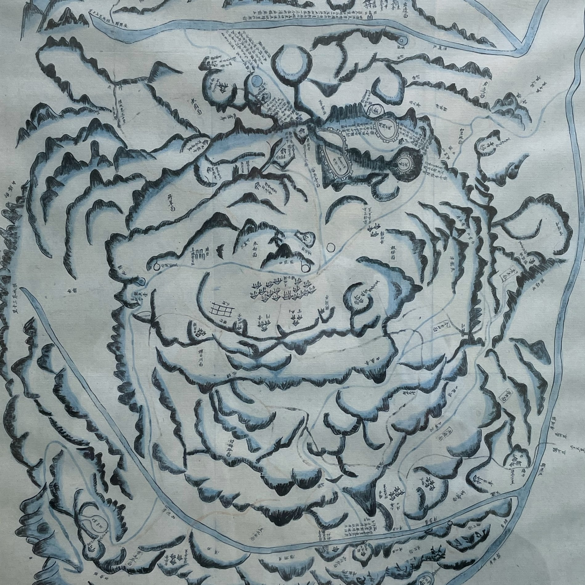
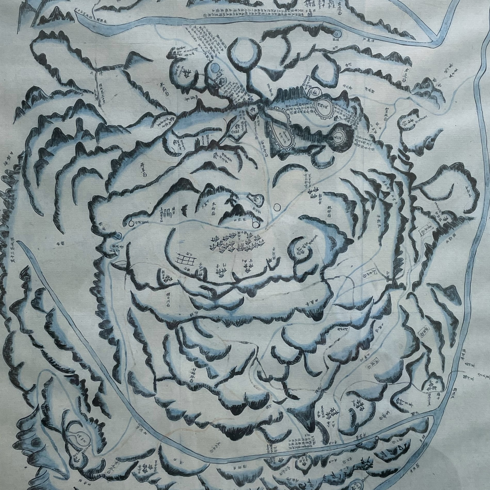
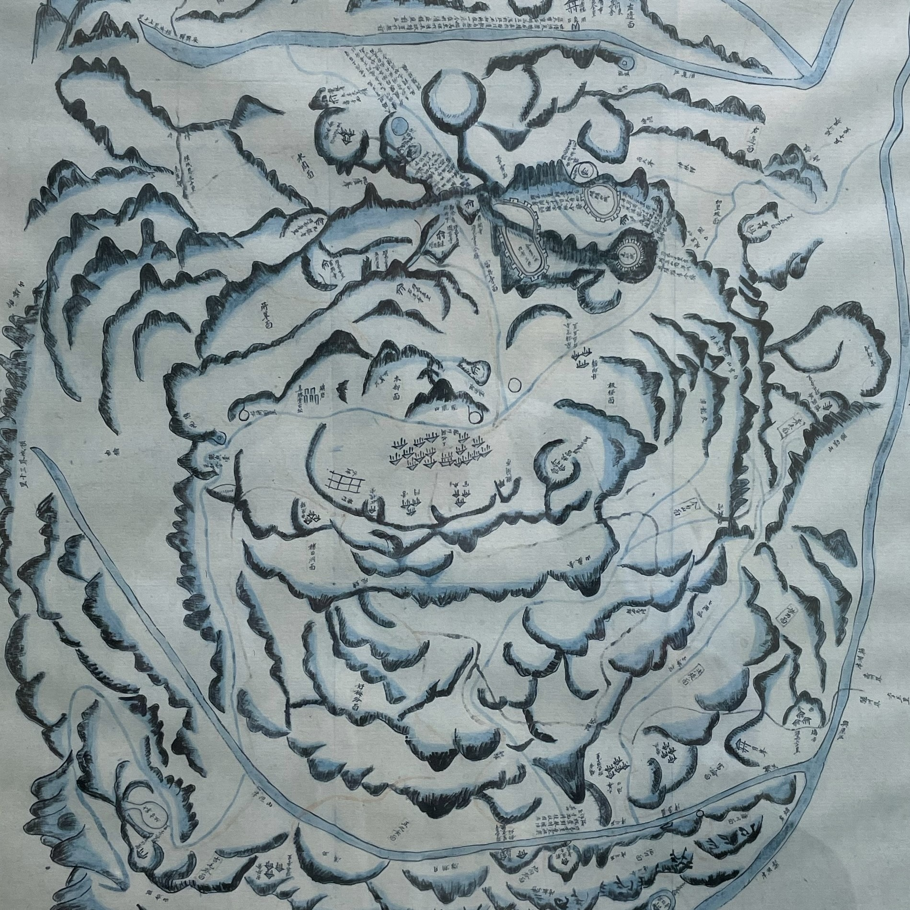

When : Only Weekdays 09:00 - 19:00 o clock.
Where : At building 82 GSES
What to bring : Nothing really :)
What to do : It's such a cool spot! They've got this cute garden with veggies and awesome architecture. You can kick back at a small table with some chairs, bring your lunch, and hang out with a few pals or simply chill and read. Hardly anyone knows about it, so it's like our little secret hideout. Pretty rad, huh?

Next Magic Word : Go up to the top flor of the GSES building. There you find a door leading to the terrace outside. However the painting of the map is placed in the top floor close to the restrooms. On the bottom right you find the measurments of the painting. Consisting of the height and the width. The next password are the 5 numbers. First the height then the width.
Next location: From the terrace, you can catch a glimpse of a small mountain. In the zoomed-in picture on the right, you'll notice a rock with a little sign on it. Try to find the general location of the sign on the map. Look out for a small symbol I created specifically for it on the map. Now, here comes the tricky part: You might have already noticed the little Mario character running around the main stadium. For the final step, grab your PC or notebook. You can use the arrow keys to guide Mario to the spot where the sign is on the map. If you manage to reach the correct location, a mystery box will appear, and you can enter the magic number. Placing Mario exactly on the right spot isn't so easy, but you're almost there!"